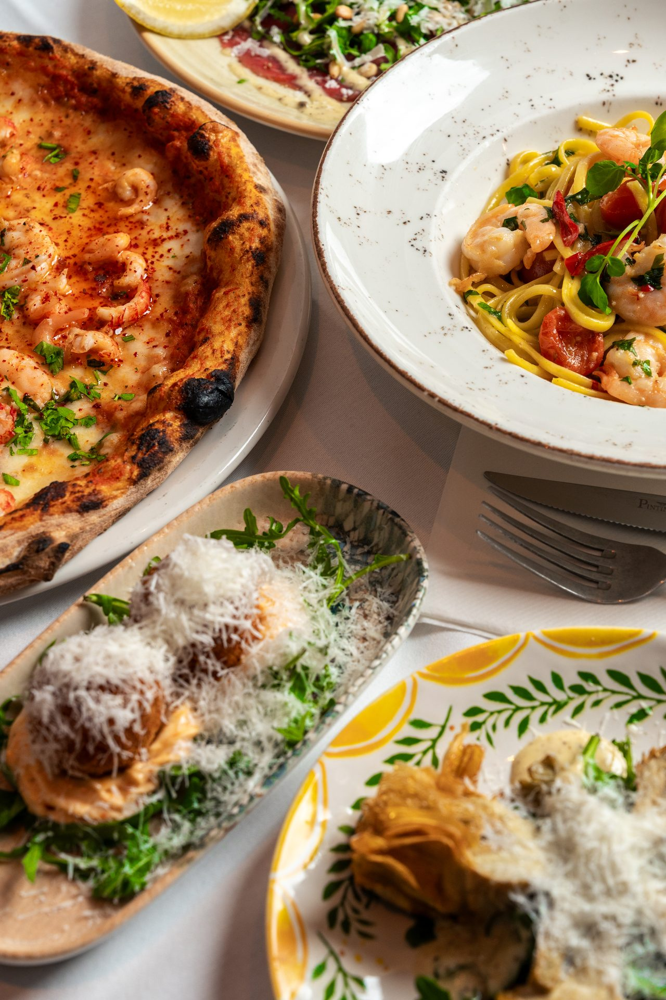

festa a casa tua
Catering
Vi packar värmen från Agaton i lådor som står vackert på ditt bord. Pizza, pasta, antipasti och vin — hemma hos dig, på kontoret, i parken.

come funziona
Fyra steg till festen
01
Välj paket
Tre fasta paket, eller skräddarsytt om ni är fler än 30.
02
Berätta läget
Antal personer, leveranstid, allergier, eventuell vegetarisk andel.
03
Vi bekräftar
Svarar inom 4 timmar med meny, pris och leverans.
04
Vi kommer
Vi dukar fram, värmer upp och städar efter oss. Ni äter.
i pacchetti
Catering-paket
Minst 10 personer. Priserna fylls i från servern — markerade "—" här.
Aperitivo
Mingel
Bruschettor, olivantipasti, salumi, ostar, grissini. För stående mingel 1 – 2 timmar.
Bruschettor, olivantipasti, salumi, ostar, grissini. För stående mingel 1 – 2 timmar.
— kr / pers
Pizza al taglio
Mångas favorit
Rektangulära pizzor skurna i bitar, fyra smaker, sallad och dessert. Räcker till barn som vuxna.
Rektangulära pizzor skurna i bitar, fyra smaker, sallad och dessert. Räcker till barn som vuxna.
— kr / pers
La Famiglia
Sittande middag
Antipastotallrik, valfri pasta, sallad, bröd. Som en riktig italiensk söndagslunch.
Antipastotallrik, valfri pasta, sallad, bröd. Som en riktig italiensk söndagslunch.
— kr / pers
La Festa
Stor fest
Trerätters: antipasti, varm huvudrätt (val mellan pasta eller kött), tiramisù. Vin och bröd till.
Trerätters: antipasti, varm huvudrätt (val mellan pasta eller kött), tiramisù. Vin och bröd till.
— kr / pers
Skräddarsytt
Fler än 30 personer
Vi bygger menyn tillsammans med er — från bröllop till företagsgala. Egen värd på plats.
Vi bygger menyn tillsammans med er — från bröllop till företagsgala. Egen värd på plats.
Offert
Ring oss. Vi löser resten.
+46 08 20 72 99 · info@restaurangagaton.se
Eller skicka en förfrågan via formuläret nedan så återkommer vi inom 4 timmar.